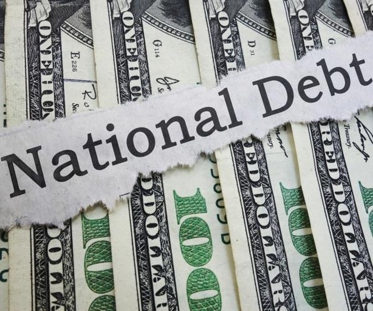

WH Blames Republicans for Record-High $34 Trillion DebtThe White House on Thursday blamed Republican tax cuts for America's national debt reaching a historic high of $34 trillion. "If you look at that data, there's a trickle-down debt. If you think about it, Republican tax cuts are responsible [for] about 90% of it — of the increase in the debt as a share of the economy over the last two decades, excluding emergency spending," White House press secretary Karine Jean-Pierre said during a press briefing when asked about U.S. debt. "And so, as we know ... what [President Joe Biden] has done to ... lower the debt, he signed a legislation to lower the deficit by $1 trillion. When you think about the Inflation Reduction Act, that's going to lower prescription drug costs and cracking down on the wealthy tax cheats that we've seen and then his agenda would cut the deficit another $2.5 trillion by making the wealthy pay their fair share." "So, that is what the president has done. What we've seen on the other side is the complete opposite," she added. "What they've [Republicans] tried to do is continue to give a tax break to the millionaires and the billionaires and that — what they have actually put forward would add more than $3 trillion to the debt," Jean-Pierre continued. "So that's what that data shows us." The U.S. Treasury Department issued a report Tuesday logging U.S. finances, which have become a source of tension in a politically divided Washington that could possibly see parts of the government shut down without an annual budget in place. Republican lawmakers and the White House agreed in June to temporarily lift the nation's debt limit, staving off the risk of what would be a historic default. That agreement lasts until January 2025. Information from The Associated Press was used in this report. Solange Reyner is a writer and editor for Newsmax. She has more than 15 years in the journalism industry reporting and covering news, sports and politics. © 2024 Newsmax. All rights reserved. |
 |